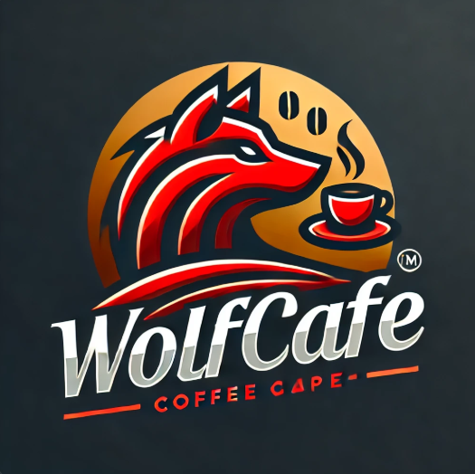
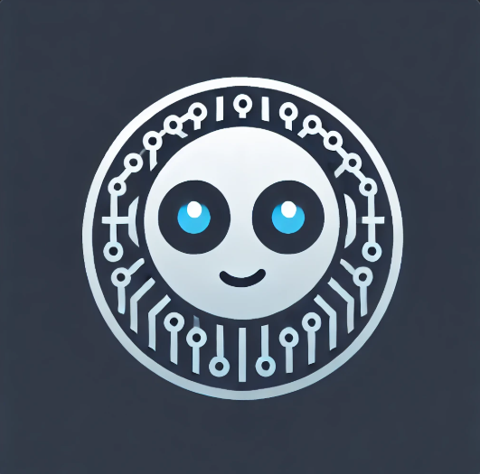
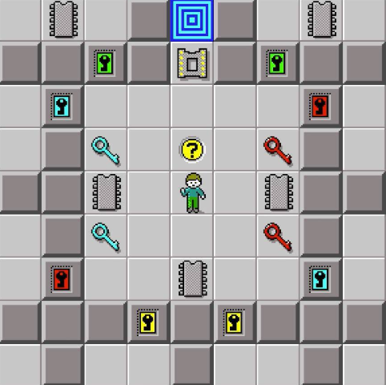

Hello world! I am Sahiti Talluri, a passionate Computer Science undergraduate student. Exploring the realms of coding, algorithms, and cutting-edge technologies, I thrive on turning complex problems into elegant solutions. Let's connect, collaborate, and code the future together!

A sleek and intuitive food ordering app built to simplify your cravings! From effortless menu browsing to quick order processing and real-time inventory updates, WolfCafe delivers a seamless experience for users and businesses alike. Dive into a project that blends innovation with user-friendly design!
Developed a Course Management System to streamline academic planning and task management. Students can easily select courses, manage schedules, and prioritize tasks with agile features like backlog creation and sprint planning. The intuitive Java-based interface offers customizable views and a dashboard for effortless management, while advanced algorithms automatically detect and resolve scheduling conflicts.

Meet my AI-Powered Chatbot—still learning but already getting smarter with every conversation. Built using Python and TensorFlow, it’s designed to understand and respond to a variety of topics. I created a knowledge base and data store to handle different scenarios and implemented neural networks to help it learn from each interaction. As it continues to train, it uses tools like NumPy, Pandas, and JSON to process and clean data, working towards offering more meaningful and natural responses.
Social Media Manager is a system that streamlines social media connection management. With features like data sorting, platform-specific filtering, and automated report generation, this tool simplifies organizing and analyzing user connections. Perfect for anyone looking to gain insights from complex social media data.

In this project, I developed an intelligent robot to navigate a maze and collect chips, keys, and open doors in a game-inspired environment. Using a combination of key collection and pathfinding algorithms, the robot prioritizes targets like red, blue, and yellow keys, as well as the corresponding doors, all while avoiding walls and ensuring safe navigation. I implemented a smart decision-making system that leverages the Manhattan distance to identify the nearest target and decide the optimal movement. With a strategy that efficiently moves towards uncollected chips and goals, the robot adapts dynamically, completing its mission step by step!